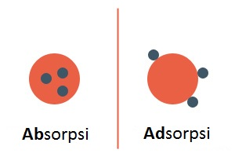

Arang merupakan produk dari proses karbonisasi kayu yang sebagian besar komponennya merupakan karbon. Sedangkan arang aktif merupakan arang yang telah mengalami pemrosesan secara lanjut dengan pemanasan tinggi atau dengan direaksikan menggunakan bahan-bahan kimia, sehingga pori-pori yang dimiliki arang menjadi terbuka dan mampu menjadi adsorben atau zat penyerap pada permukaan. Adsorben berbeda dengan absorben, apa bedanya?
• Absorbsi adalah proses dimana zat terserap ke dalam suatu cairan ataupun padatan secara keseluruhan.
• Adsorpsi adalah proses dimana atom, ion ataupun molekul melekat/terjebak di pori-pori permukaan dari adsorbent. Adsorbsi terjadi hanya pada bagian lapisan permukaan zat, sehingga dalam prosesnya bergantung pada luas permukaan dari zat penyerap.

Daya serap yang besar dari arang aktif inilah yang menjadikan arang aktif populer digunakan pada berbagai macam produk (kecantikan maupun kesehatan). Daya serap arang aktif terjadi karena adanya pori-pori berukuran mikro yang jumlahnya banyak (Yustinah, 2011). Pemanfaatan arang aktif sebagai adsorben banyak digunakan untuk menyerap cairan beracun, gas beracun, bau busuk, penjernih air, filter air minum, dan sebagainya (Akhmad B dkk, 2012). Bahkan dalam kesehatan, arang aktif dapat digunakan untuk mengatasi keracunan atau gangguan pencernaan, seperti perut kembung atau diare. Meski dapat digunakan untuk mengatasi keracunan, karbon aktif tidak efektif dalam mengatasi keracunan yang disebabkan oleh sianida, lithium, alkohol, atau zat besi.